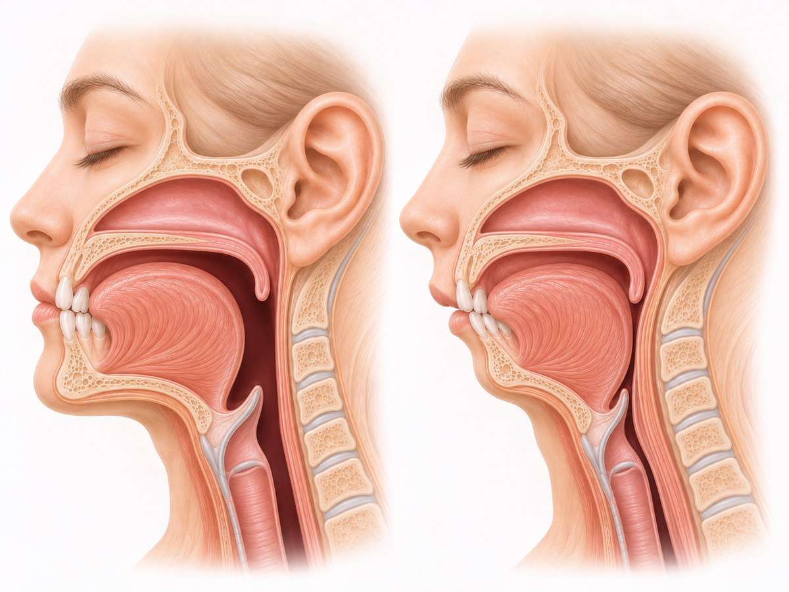

숨이 지나는 길(기도)은 혀와 아래턱 바로 뒤에 있습니다.
잠든 동안 아래턱이 뒤로 처지면 혀도 따라 밀려 기도가 좁아집니다.
좁아진 길로 공기가 지나며 떨리는 소리가 코골이입니다. 숨이 반복해서 멈추면 수면무호흡입니다.
숨이 멈추는 것을 가족이 봤거나 낮에 심하게 졸리면 수면 검사가 먼저입니다.
기도의 앞쪽 벽은 혀와 아래턱이 받치고 있습니다. 깨어 있을 때는 근육이 이 벽을 붙잡아 줍니다. 잠이 들면 근육의 힘이 풀리고, 아래턱이 작거나 뒤로 들어간 분은 혀가 기도 쪽으로 더 쉽게 밀립니다.
잠이 턱에 주는 영향도 있습니다. 잠이 자주 끊기면 통증에 예민해집니다. 수면의 질이 나쁜 사람에게서 턱관절 통증이 더 많이 생겼다는 추적 연구가 있습니다. 자면서 이를 가는 분에게서 수면무호흡이 함께 보인다는 보고도 있습니다.
숨이 멈추는 것을 가족이 본 적이 있거나, 낮에 졸음이 심해 운전이나 업무가 어렵다면 수면 클리닉이나 이비인후과에서 수면 검사를 먼저 받습니다. 수면무호흡은 검사로 진단합니다.
턱관절과 씹는 근육, 치아가 닳은 정도, 아래턱의 위치를 확인합니다.
코골이나 진단받은 수면무호흡에는 자는 동안 아래턱을 조금 앞으로 내어 기도를 넓히는 맞춤 장치를 만듭니다. 미국 수면의학회와 치과수면의학회의 진료 지침은 이 장치를 치과의사가 맞춤으로 만들고 경과를 살피도록 권합니다.
이갈이가 함께 있으면 턱관절과 치아에 걸리는 부담도 같이 줄입니다.
코골이와 아침 턱 통증이 함께 있다면, 턱의 위치와 수면 상태를 같이 확인해 드립니다.
전화 상담 02-6745-2754이 페이지는 일반적인 건강정보이며 개인의 진단이나 치료를 대신하지 않습니다. 증상이 지속되거나 갑자기 악화되면 의료기관에서 진료를 받으시기 바랍니다.